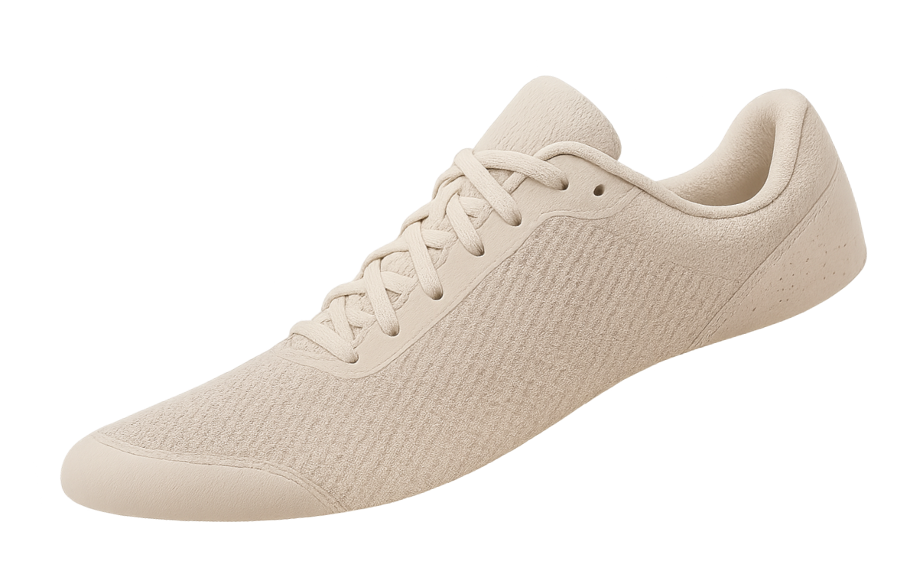
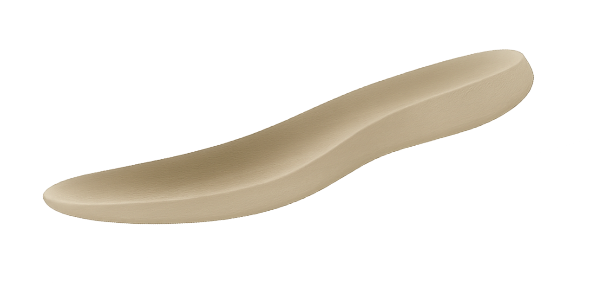
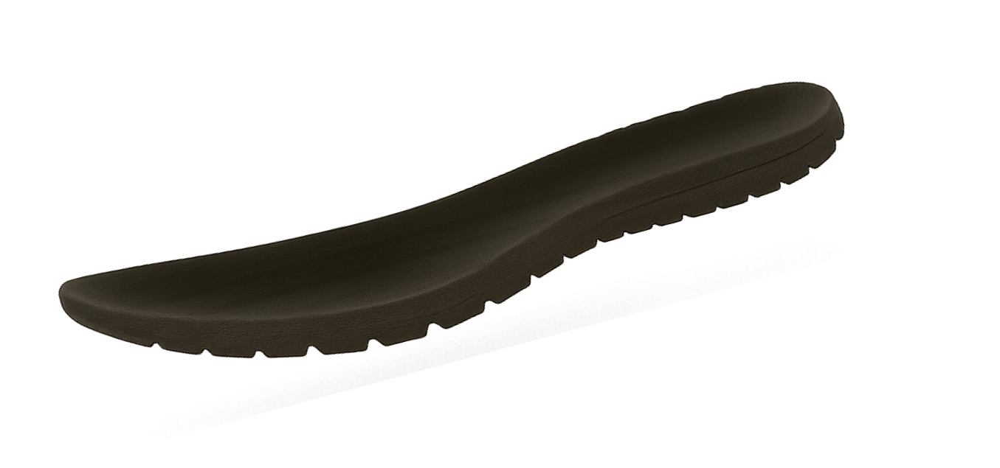

새롭게 선보이는 Running HIGH X는 역대 최강의 러닝화 모델이 되도록 디자인
되었습니다. 성능, 내구성, 착화감을 극대화 하는 공기 역학적 UniBody가
바로 새 디자인의 핵심이죠.



발이 시려울 정도의 놀라운 통기성
샌드위치 메시
마치 구름 위를 걷는 듯한 쿠션감
서브웨이 쿠션
스프링을 달아 놓은 듯한 탄성력
맥도날드 우레탄
샌드위치 메시.
그 위대한 통풍성의 경험.
새로운 어퍼는 샌드위치 메시를 사용하여 강력한 통풍성을 제공합니다.
최대 100배의 온도 감소를 통해, 마치 냉장고를 신고 있는 경험을 해보세요.
서브웨이 쿠션.
집밥과 같은 편안함.
서브웨이 쿠션을 사용한 미드솔은 기존과의 쿠션과는 전혀 다릅니다.
마치 구름 위를 걷는 듯한 안정적이고 편안한 쿠션을 경험해보세요.
맥도날드 우레탄.
스프링 그 이상의 탄력.
새로운 우레탄은 맥도날드 우레탄을 사용하여 대단한 탄력감을 제공합니다.
마치 스프링을 신고 있는 듯한 경험을 해보세요.
Running HIGH라고 하는 데는 다 그만한 이유가 있다.

무게를 잊은 편안함
멀찌감치 앞서다.
최대
100배
기록 단축
전체
15g
무게
Running high X의 모든 곳에는 멀찍이 앞서 나갈 수 있는 혁신이 깃들어
있습니다. 미드솔은 우리의 차세대 슈퍼베스트 디자인과 100배 더 가벼워진
무게를 자랑하죠. 사내 테스트 기록으로 최대 100배 기록이 단축되는
러닝화 역사상 가장 가볍고 뛰어난 성능
을 제공합니다. 덕분에 기록 단축 퍼포먼스는 물론 일상에서 지각을 절대
하지 않을 수 있죠.